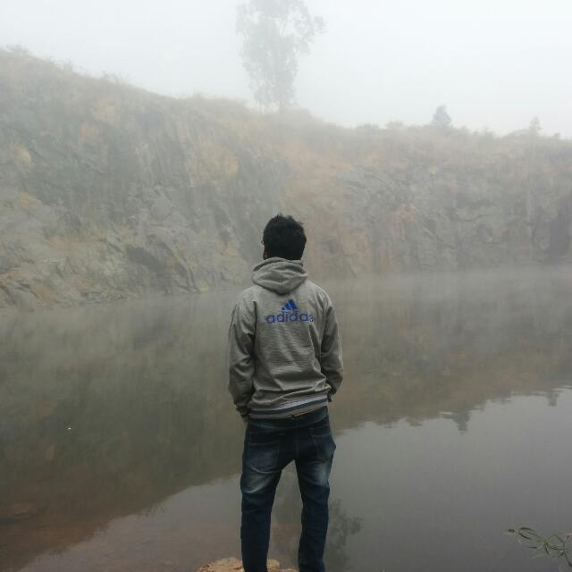

Business logic that stays understandable
Spring Boot services, REST APIs, domain models, validation, exception handling, async workflows, and microservice contracts.
Full-stack engineering
I work across Java services, React products, data models, cloud workflows, delivery pipelines, and production incidents—because users experience the whole system, not its org chart.

Full-stack work is less about knowing every tool and more about preserving intent as a feature travels through the system.
Spring Boot services, REST APIs, domain models, validation, exception handling, async workflows, and microservice contracts.
React and TypeScript experiences that make system state, decisions, errors, and next actions clear to the user.
SQL, Oracle, DynamoDB, normalized schemas, audit histories, and query behavior designed around the product.
Docker, Maven, Gradle, Git, build automation, CI/CD, and the discipline to remove manual uncertainty.
Logging, monitoring, high-severity incident handling, root-cause analysis, performance tuning, and durable fixes.
Clarify actors, workflows, constraints, dependencies, data ownership, edge cases, and how success will be recognized.
Shape APIs, schemas, components, deployment changes, and observability before implementation makes the decisions expensive.
Implement in reviewable slices, validate across layers, automate what repeats, and make failure behavior as deliberate as success behavior.
Watch signals, respond to incidents, find root causes, and turn operational evidence into the next improvement.
Leadership operations, product maintenance, analytics tooling, insurance calculations, platform microservices, and biometric research.
My current learning path covers LLM engineering, RAG, QLoRA, agents, MCP, and Azure AI. The goal is not novelty—it is building intelligent workflows with the same attention to product value and reliability.
Let’s talk about systems where backend depth, frontend judgment, cloud delivery, and operational ownership all matter.